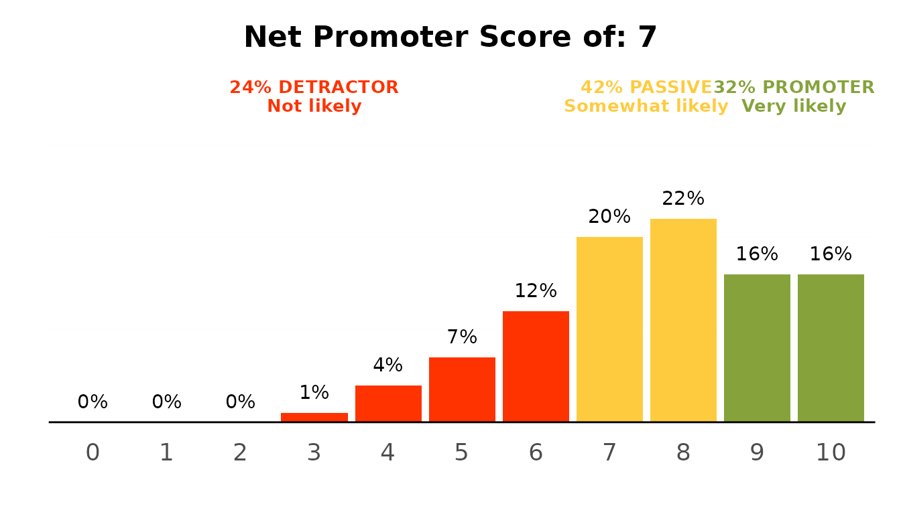
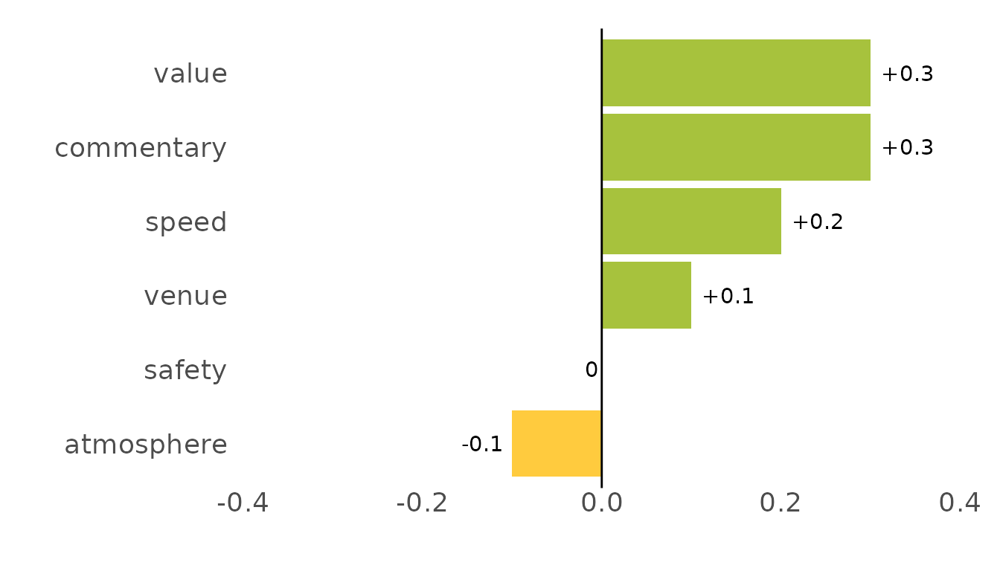

ezrsurvey turns the things consumer-survey analysts do
over and over into single-line helpers. This vignette walks through a
typical analysis of the bundled podracing_survey dataset:
from raw answers to percentages, models, diagnostics and a chart you
could drop on a slide.
library(ezrsurvey)
#> Loading required package: dplyr
#>
#> Attaching package: 'dplyr'
#> The following objects are masked from 'package:stats':
#>
#> filter, lag
#> The following objects are masked from 'package:base':
#>
#> intersect, setdiff, setequal, union
#> Loading required package: ggplot2
#> Loading required package: tidyr
#> Loading required package: tibble
#> Loading required package: readr
#> Loading required package: stringr
#> Loading required package: purrrThe data
podracing_survey is 1,000 simulated respondents with
demographics, a 0–10 NPS question, worded feature ratings, multi-select
motivations, brand questions and open-text comments.
podracing_survey[, c("respondent_id", "demo_gender", "demo_age", "nps_value")]
#> # A tibble: 1,000 × 4
#> respondent_id demo_gender demo_age nps_value
#> <chr> <chr> <int> <int>
#> 1 R00001 Male 35 10
#> 2 R00002 Male 29 6
#> 3 R00003 Male 16 10
#> 4 R00004 Male 16 10
#> 5 R00005 Male 16 9
#> 6 R00006 Male 36 9
#> 7 R00007 Male 30 10
#> 8 R00008 Female 23 9
#> 9 R00009 Female 23 10
#> 10 R00010 Male 39 9
#> # ℹ 990 more rowsPercentages without the
count/mutate/pivot_wider
dance
calc_percentage() is the workhorse: counts, percentages
and ordering in one call.
calc_percentage(podracing_survey, demo_gender, sort = "desc")
#> # A tibble: 3 × 3
#> demo_gender n pct
#> <fct> <int> <dbl>
#> 1 Male 525 55
#> 2 Female 399 42
#> 3 Non-binary 27 3Group with by, and pivot to a wide cross-tab with
wide = TRUE:
calc_percentage(podracing_survey, satis_return, by = region, wide = TRUE)
#> # A tibble: 5 × 6
#> region Likely `Not sure` Unlikely `Very likely` `Very unlikely`
#> <chr> <dbl> <dbl> <dbl> <dbl> <dbl>
#> 1 Asia 24 25 12 34 5
#> 2 Europe 28 25 16 25 6
#> 3 Latin America 30 21 11 28 10
#> 4 North America 26 24 17 24 8
#> 5 Oceania 31 12 24 24 10Check-all-that-apply questions live in a block of columns sharing a
prefix; calc_percentage_multi() handles the per-respondent
denominator for you:
calc_percentage_multi(podracing_survey, "motivations_",
id = respondent_id, sort = "desc")
#> # A tibble: 5 × 3
#> option n pct
#> <fct> <int> <dbl>
#> 1 speed 772 79
#> 2 drivers 533 54
#> 3 social 437 45
#> 4 tradition 349 36
#> 5 betting 295 30Spreadsheet exports, Google Forms among them, instead pack every answer a respondent ticked into a single cell. The same function recognises that shape and separates the answers, so you do not have to reshape anything first:
packed <- data.frame(
respondent = 1:4,
motivations = c("Speed; Drivers", "Speed", "", "Betting; Speed")
)
calc_percentage_multi(packed, "motivations", id = respondent, sort = "desc")
#> # A tibble: 3 × 3
#> option n pct
#> <fct> <int> <dbl>
#> 1 Speed 3 100
#> 2 Betting 1 33
#> 3 Drivers 1 33Note the denominator: three respondents ticked something, so “Speed”
is 3 of 3. When you need those answers as columns rather than as a
table, for a crosstab or a filter, split_multi() widens
them:
split_multi(packed, motivations)
#> # A tibble: 4 × 5
#> respondent motivations motivations_Speed motivations_Betting
#> <int> <chr> <chr> <chr>
#> 1 1 "Speed; Drivers" "Speed" ""
#> 2 2 "Speed" "Speed" ""
#> 3 3 "" "" ""
#> 4 4 "Betting; Speed" "Speed" "Betting"
#> # ℹ 1 more variable: motivations_Drivers <chr>Reusable level orders
Rather than retyping levels = c(...), register an order
once and link it to a variable; calc_percentage() then
applies it automatically.
register_order(
"education",
levels = c("Primary or less", "Lower secondary", "Upper secondary",
"Short-cycle tertiary", "Bachelor or equivalent",
"Master or equivalent", "Doctoral or equivalent"),
vars = "demo_edu"
)
calc_percentage(podracing_survey, demo_edu)
#> # A tibble: 7 × 3
#> demo_edu n pct
#> <ord> <int> <dbl>
#> 1 Primary or less 42 4
#> 2 Lower secondary 111 11
#> 3 Upper secondary 295 30
#> 4 Short-cycle tertiary 123 13
#> 5 Bachelor or equivalent 244 25
#> 6 Master or equivalent 122 13
#> 7 Doctoral or equivalent 35 4Net Promoter Score
calc_nps(podracing_survey, nps_value)
#> # A tibble: 1 × 8
#> n nps pct_detractors pct_passives pct_promoters detractors passives
#> <int> <dbl> <dbl> <dbl> <dbl> <int> <int>
#> 1 1000 7 25 43 32 252 426
#> # ℹ 1 more variable: promoters <int>
plot_nps(podracing_survey, nps_value)
Importance / performance
ipm_model() combines driver importance (by default,
relative weights against the NPS score) with feature performance;
plot_ipm() draws the matrix. Pass
method = "forest" for a random-forest cross-check, which
sees non-linear effects that relative weights cannot.
model <- ipm_model(podracing_survey, nps_value, "ratings_")
#> Parsing `nps_value` as a non-binary variable.
#> Applying multiple regression to calculate relative weights...
model
#> # A tibble: 6 × 4
#> feature importance performance perf_class
#> <chr> <dbl> <dbl> <fct>
#> 1 value 24.9 2.86 2
#> 2 atmosphere 23.8 3.57 3
#> 3 speed 18.0 3.48 3
#> 4 safety 14.1 2.88 2
#> 5 venue 12.2 3.08 3
#> 6 commentary 6.99 2.58 2Comparing two events
For event surveys you often compare this wave with the last.
compare_values() computes the differences and
plot_diff() draws the change chart.
previous <- transform(model, performance = performance - c(.3, -.1, .2, 0, .1))
#> Warning in performance - c(0.3, -0.1, 0.2, 0, 0.1): longer object length is not
#> a multiple of shorter object length
compare_values(model, previous) %>%
plot_diff()
How precise is it?
diagnose() reports the standard error, relative standard
error and margin of error for any column – numeric (point) or
categorical (proportion).
diagnose(podracing_survey, demo_gender, nps_value)
#> # A tibble: 2 × 9
#> variable type unit n estimate se rse moe precision
#> <chr> <chr> <chr> <int> <dbl> <dbl> <dbl> <dbl> <chr>
#> 1 demo_gender prop ppt 951 55.2 1.61 2.92 3.16 high precision
#> 2 nps_value mean points 1000 7.56 0.06 0.74 0.11 high precisionFor a one-shot, plain-language read on the whole study,
precision_summary() picks the point-scale and proportion
variables for you and writes the bullet points you would otherwise
hand-craft for a report appendix:
precision_summary(podracing_survey)
#> Survey precision summary
#> - Based on 1,000 total responses (per-question base of 776 to 1,000).
#> - Point ratings carry a sampling margin of about +/-0.40 points (up to +/-0.69) at 95% confidence.
#> - Percentages carry a sampling margin of about +/-3.0 percentage points (worst case +/-3.1 at a 50/50 split).
#> - Overall relative standard error of about 4.2% -- high precision.Why relative standard error?
A standard error on its own is hard to judge – is ±0.05
good? It depends on the scale. The relative standard
error (RSE) divides the standard error by the estimate, so
precision becomes comparable across a 1–5 rating and a percentage alike.
Rating estimates by their RSE is the approach national statistical
agencies use to decide whether a number is solid enough to publish. The
Australian
Bureau of Statistics, for example, treats an RSE of 25% or more as
not reliable for most purposes, marks estimates between 25% and 50% with
an asterisk as ones to use with caution, and suppresses anything above
50%. ezrsurvey keeps that 25% boundary and adds tighter bands below it,
because in consumer-survey work the question is usually which of several
adequately precise numbers to lead with:
| RSE | Rating |
|---|---|
| under 5% | high precision |
| under 10% | precise |
| under 15% | satisfactory |
| under 25% | use with caution |
| 25% or more | likely reliability issues |
For proportions, the margin of error is widest at a 50/50 split
(sqrt(0.5 * 0.5 / n)), so a single worst-case
± percentage-point figure at your achieved sample size
bounds every percentage in the study – which is why
precision_summary() reports it.
Saving and exporting
Every table and plot has a one-line, pipe-friendly save. A bare file
name lands in an ezrsurvey-outputs/ folder, created on
demand, so a script’s results collect in one place instead of scattering
through the working directory; pass a path with a directory in it
("./gender.xlsx", "tables/gender.xlsx",
anything absolute) to put a file exactly where you want it. The first
save of a session says which folder it used, so nothing goes
missing.
calc_percentage(podracing_survey, demo_gender) %>% save_data("gender.xlsx")
plot_nps(podracing_survey, nps_value) %>% save_plot("nps.png")
# several tables, one tab each
export_xlsx(
gender = calc_percentage(podracing_survey, demo_gender),
job = calc_percentage(podracing_survey, demo_job),
path = "summary.xlsx"
)Where to next
- Set persistent defaults with
ezrsurvey_options()and a profile (use_ezrsurvey_profile()). - Build a deck with
report_deck()or scaffold a Quarto report withscaffold_report(), which drops the.qmdbeside where its render will land. - Draft the narrative around the tables with the companion
ezrintelligencepackage.